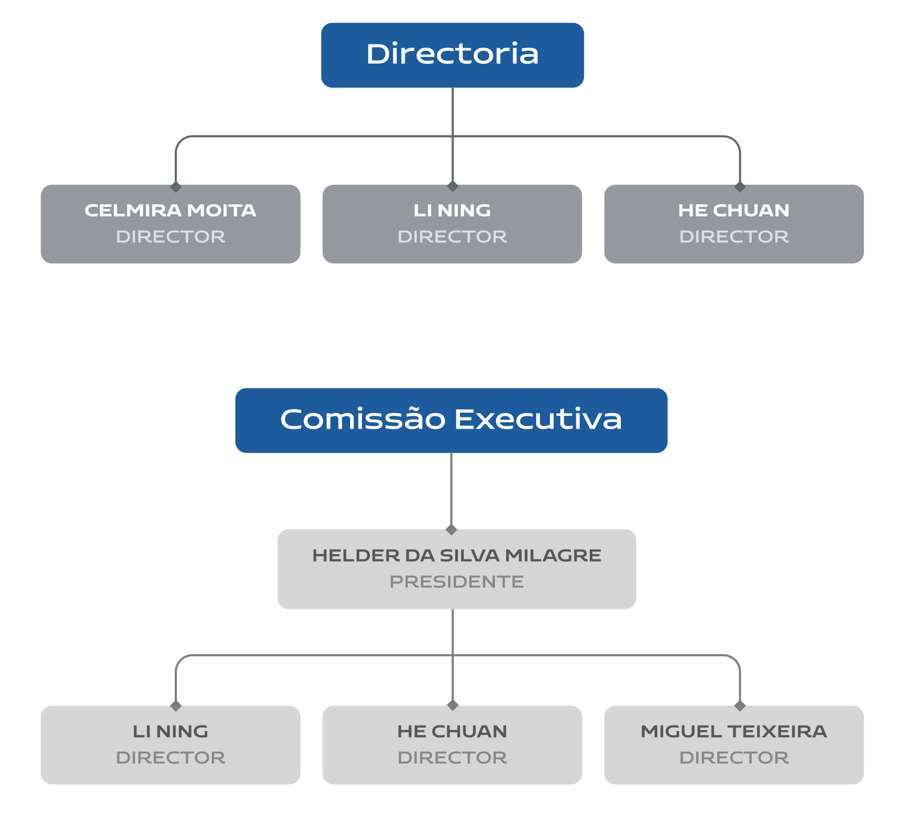
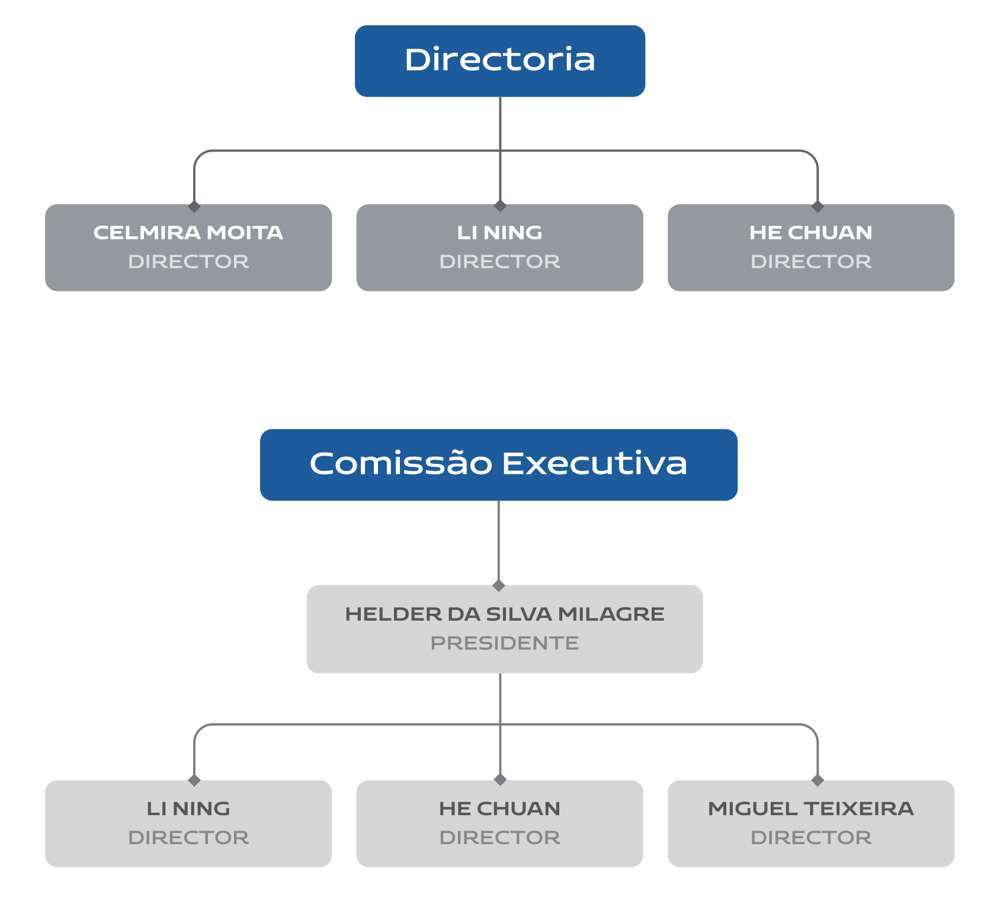

Kitota é uma mina de manganês localizada no Município de Cacuso, na Província de Malange em Angola.
A Mn Kitota tem-se dedicado ao reconhecimento, pesquisa, prospecção e exploração de minerais e coopera com o projeto mineiro estruturado pelo Plano de Desenvolvimento Nacional (PDN).
Em 2021 atingimos o objetivo de produção de 1 milhão de toneladas desse produto que é muito utilizado pela indústria siderúrgica, onde é empregado para melhorar a qualidade, maleabilidade e resistência de ligas metálicas.
Produtos
Manganês
O manganês é um metal muito utilizado na indústria, especialmente na produção de aço, pois confere resistência à corrosão e ao desgaste.
Ele também é usado na fabricação de ligas de alumínio, que são empregadas em latas de bebidas, embalagens e utensílios domésticos.
Outros usos do manganês incluem a produção de pilhas secas e alcalinas, a produção de vidros, a síntese de corantes e a remoção de enxofre e oxigênio de metais.

Ferro
O ferro é o metal mais utilizado no mundo, sendo o quarto mais abundante na crosta terrestre. Sua utilização é tão extensa que existe um campo da metalurgia só para estudar a sua produção e seus compostos: a siderurgia.
Seus usos são muito amplos, sendo essencial para a economia e sociedade. Do ferro se faz o aço, utensílios industriais e domésticos, automóveis, pontes, estruturas de edifício, cascos de navios, etc.

Quem somos
voltarSomos uma empresa mineira, fundada em Angola no ano de 2019.
Após a conclusão do cálculo de reservas e dos estudos de impacte ambiental e de viabilidade técnica, econômica e financeira, foi-nos concedida uma licença de exploração de manganês, dos pontos 1, 2 e 6 da área de concessão da kitota.
A primeira fase de exploração da mina da kitota (lavra a céu aberto) teve início no ano 2021 com uma satisfatória capacidade de produção.

Acesse a nossas licenças:
Equipa de Gestão
Neste organigrama, apresentamos a forma como nossa empresa é estruturada e hierarquizada visando o alcance dos nossos objetivos e resultados de forma a aproveitar o potencial de cada um.
 

Localização
A mina da kitota está localizada no Município de Cacuso, na Província de Malange em Angola.
Localizada na região norte do país, Malange é privilegiada em termos de belezas naturais, além disso, possui uma linha férrea que a liga à Província de Luanda, o que tem permitido o desenvolvimento da região.

Notícias e Mídia
Acompanhe aqui as últimas notícias sobre a nossa empresa. Veja as principais divulgações de comunicação sobre nós e fique por dentro das novidades, tendências e oportunidades do mercado.

Exploração de manganês em Malanje arranca este mês
Numa primeira fase, a empresa MN Kitota, prevê iniciar com uma exploração de 10 toneladas de manganês...

Kitota coloca Angola entre produtores de Manganês
O Ministro dos Recursos Minerais, Petróleo e Gás, Diamantino Azevedo, acompanhado pelos governadores de...
Exploração de Manganês em Kitota começa este mês
Enquadrado no Programa Nacional de Desenvolvimento, o projecto mineiro prevê atingir até finais deste ano...

Reactivan en Angola explotación minera de manganeso
Luanda, 7 abr (Prensa Latina) El gobierno de Angola notificó hoy la reactivación de un proyecto minero para...
Contactos
Quer saber mais sobre nossos produtos e serviços? Entre em contacto conosco pelo formulário a seguir, ou pelos nossos canais de atendimento. Estamos sempre prontos para tirar suas dúvidas e oferecer as melhores soluções para o seu negócio.
Condomínio Belas Business Park
Edf. Luanda, 8º 801ª Talatona
República de Angola
Telefone: +244 932 730 086
Email: info@mnkitota.com